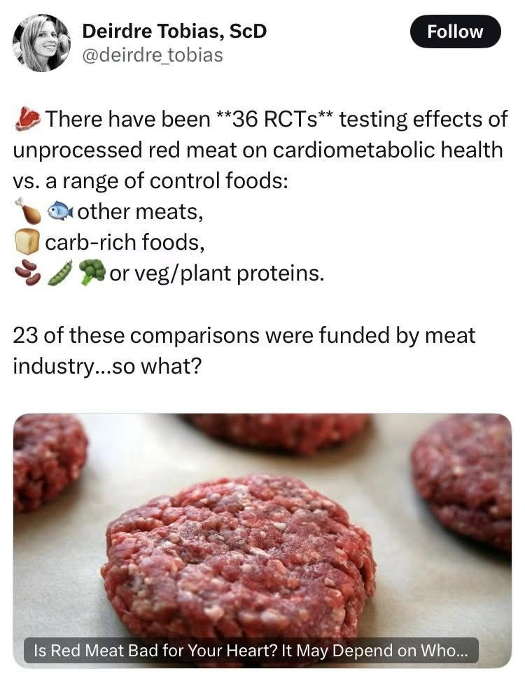
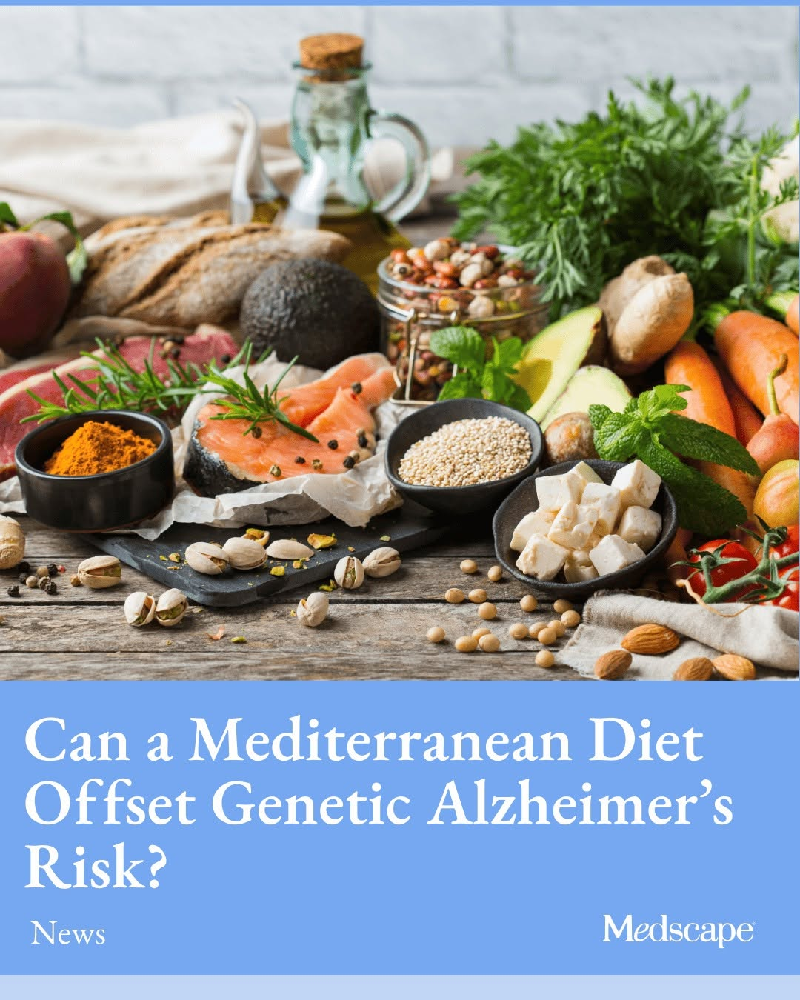
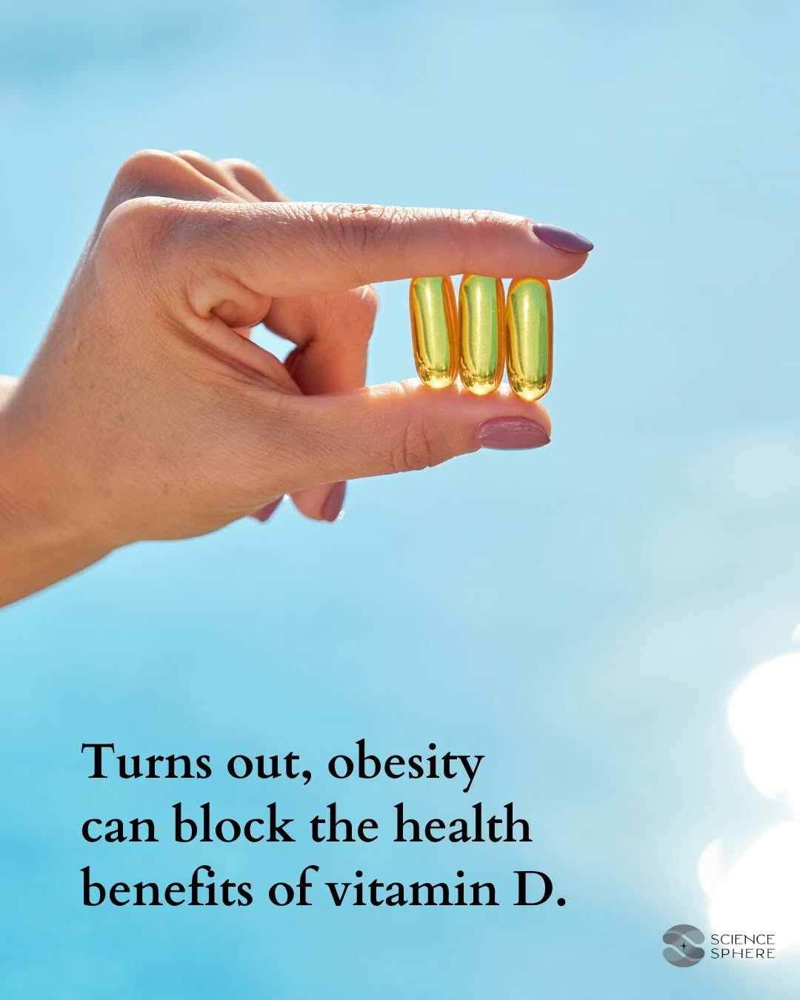

One avocado a week linked to 16% lower CVD and 21% lower CHD over 30 years
Harvard cohort data from about 110,000 people found weekly avocado eaters had lower cardiovascular and coronary heart disease risk than rare or non-eaters.
140 posts
Harvard cohort data from about 110,000 people found weekly avocado eaters had lower cardiovascular and coronary heart disease risk than rare or non-eaters.

Louis summarizes the COSMOS randomized trial of 500 mg/day cocoa flavanols (and multivitamin) in over 21,000 adults for 3.6 years. Total cardiovascular events fell 10%, which was not statistically significant, but CVD death fell a significant 27% and major CV events were also significantly reduced. Adherence-adjusted analyses showed 15% fewer total events and 39% fewer CVD deaths; authors urge cautious interpretation.

Louis shares Deirdre Tobias's thread on 36 RCTs of unprocessed red meat versus other foods. Government and academic funded trials mostly found worse cardiometabolic health, and exceptions were industry-funded; 23 comparisons were industry funded.
Louis summarizes a Harvard/Brigham cohort analysis of the Nurses' Health Study, HPFS and NHS II covering over 30 years. Higher butter intake was associated with higher all-cause and cancer mortality, while plant oils (especially olive, canola and soybean) were associated with lower all-cause, cancer and cardiovascular mortality.
Reposting a summary of the COSMOS trial at Harvard/Brigham: more than 21,000 adults took 500 mg cocoa flavanols daily, a multivitamin, both or neither. Total CV events fell 10% (not significant), but CV death fell a significant 27%, with larger effects (15% total events, 39% for CV death-type outcome) among adherent participants.

Louis shares a UCSF crossover study in men with heart disease where high-flavonoid cocoa improved flow-mediated dilation and increased circulating angiogenic cells. He links this to the COSMOS cocoa-extract trial, in which cardiovascular death fell 27%.

A shared summary describes a 15-year JAMA Internal Medicine study in which people getting 25% or more of calories from added sugar had over twice the CVD death risk of those under 10%, regardless of weight or other factors. Louis clarifies that the comparison is with dietary cholesterol, not blood cholesterol.
Louis shares CNN coverage of Harvard Nurses' Health Study results. Women who drank one to three cups of caffeinated coffee daily in their 50s were more likely to reach older age free of major chronic disease with good cognitive, physical and mental health.
Louis reposts a Harvard diabetologist's explanation that in most people fat stored in the liver is the biggest cause of insulin resistance. Losing liver fat by any means dramatically improves it, and weight loss removes liver fat first. Refined starch and sugar-sweetened drinks raise the odds, though excess calories alone can do it. Visible abdominal visceral fat is a simple proxy.
Louis summarises a Harvard cohort analysis of over 200,000 adults across the Nurses' Health Study and related cohorts. Replacing butter with unsaturated plant oils was associated with lower cancer and overall mortality, with the biggest benefits from olive, canola and soybean oil.
A May 2024 analysis of the Nurses' Health Study and Health Professionals Follow-up Study found at least 7 g of olive oil daily was associated with 28% lower dementia-related mortality versus never or rarely using it, regardless of genetic predisposition and overall diet quality.
Louis argues that mainstream nutrition science now sees refined sugar and refined starch, possibly including white potatoes, as direct causes of heart disease and diabetes, citing Harvard's Walter Willett in a ZOE interview. He notes about 40% of US calories come from refined sugar/starch and white potatoes, and says this should be replaced with healthier carbohydrate or healthy fat and protein sources. The post is opinion backed by an expert interview, not a specific study.
Louis comments on a video clip about the Lyon Heart Study, a randomized secondary-prevention trial in people with a prior heart attack. The traditional Mediterranean diet cut cardiovascular events about 70% and all-cause death about 70% over 2.5 years, which he calls the largest total mortality reduction reported in a CVD prevention trial and about twice the benefit of statins in secondary prevention.
Louis describes a randomized feeding trial at Harvard Medical School and MGH asking if plain white potatoes impair endothelial function and promote arterial inflammation. The trial follows cohort findings linking potato consumption to hypertension and diabetes.
Louis argues white potatoes may be as harmful as refined starch and sugar, citing Harvard's Nutrition Source page (since rewritten, as he notes) and the view that potatoes should be classed as refined grain. He also states refined starch and sugar plus potatoes provide over 40% of calories in the standard American diet.

The poster says many randomized trials in humans refute the claim that omega-6 fats from seed oils are inflammatory, linking a Walter Willett discussion. No individual trials are cited in the post.
Louis notes human trials of lithium orotate begin at MGH/Brigham in spring 2026, following Harvard findings that lithium deficiency may drive Alzheimer's even when amyloid plaques are present.
Louis shares Harvard research on 221,054 people from the Nurses' Health Studies I and II and the Health Professionals Follow-Up Study, published in JAMA Internal Medicine. Higher plant-oil intake (especially soybean, canola, olive) was linked to lower total, cancer and cardiovascular mortality, while butter was linked to higher total and cancer mortality; a modeled swap of 10 g butter for plant oils lowered mortality by 17%.
Louis lists cohorts, including the Adventist Health Study showing 48% lower fatal CHD with nuts >4 times weekly, and the Nurses' Health Study.
Louis recommends the Harvard Medical School guide 'Eat, Drink, and Be Healthy' as the best lay book on the Mediterranean diet and links a free PDF. He quotes it saying good eating plus healthy weight, exercise and not smoking can prevent 80% of heart attacks, 90% of type 2 diabetes and 70% of colorectal cancer. He notes the diet can be adapted to low-carb, Mexican, Asian and other versions.
Louis cites a 2022 Nurses' Health Study analysis in which higher plant protein intake was associated with lower frailty risk, while animal and dairy protein were not. He adds that protein alone does not build muscle without resistance exercise.
Louis shares Harvard analysis of nearly 200,000 people in the Nurses' Health Studies and Health Professionals Follow-up Study. Dark chocolate was associated with lower diabetes risk, while milk chocolate was linked to weight gain and no benefit. He advises low-sugar dark chocolate with cocoa butter rather than milk fat.
Medical Xpress reports that daily cocoa extract supplementation lowered hsCRP, a key inflammation marker, in older adults in the COSMOS randomized trial. Louis notes this anti-inflammatory effect may partly explain the reduction in cardiovascular mortality seen in the trial.
Louis shares an AHA press release on Harvard cohort data (Nurses' Health Study I and II, Health Professionals) for 221,054 adults. Replacing a daily tablespoon of butter with unsaturated plant oil was associated with lower cancer and total mortality, and each extra tablespoon of butter with higher cancer risk. Olive, canola and soybean oil showed the biggest benefits.
Louis explains food folate is polyglutamate-bound and less bioavailable than folic acid, which is less bioavailable than 5-MTHF supplements. Raising methylfolate too high may fuel precancerous cells and shortened lifespan in worms and mice.

Louis shares a summary of the COSMOS randomized trial of 21,442 older adults taking a 500 mg daily cocoa-extract supplement. It reduced CVD mortality by 27% (HR about 0.73) over 3.6 years as a secondary outcome, without a statistically significant reduction in the primary total CVD events endpoint.

Louis shares a summary of a VITAL ancillary study in 1,031 older adults in which daily vitamin D3 2,000 IU preserved leukocyte telomere length versus placebo, roughly 3.5-4.5 years of reduced biological aging. Omega-3 (1 g/day) showed no effect on telomere length. Telomere length is a surrogate marker.

Louis stresses that not all plant-based diets are healthy. In the Nurses' Health Study and Health Professionals Follow-up Study, a plant-based index rich in healthy plant foods was linked to substantially lower CHD risk while one emphasizing sugary drinks, refined grains, potatoes and sweets was linked to higher risk, worse than the standard diet baseline.
Louis discusses a Nature Communications cohort study and meta-analysis suggesting cheese slightly lowers CVD risk. He cautions that comparisons are typically against the standard American diet, so the result depends on what cheese replaces.

Louis calls the COSMOS epigenetic-aging analysis arguably the highest quality RCT on multivitamins ever done. All five clocks showed a signal for slower aging, with significant effects on PCGrimAge and PCPhenoAge amounting to roughly 4 months of aging averted over 2 years, and larger effects in those with accelerated aging.

Louis says Walter Willett shares his concern that processed whey could raise insulin, IGF-1 and mTOR, which are implicated in cancer, heart disease and aging. He notes whey has short-term benefits but little long-term data.

Louis summarises Harvard Nurses' and Physicians' follow-up data on nearly 300,000 people over 30 years. Plant protein was protective, fish and poultry slightly so, dairy and eggs neutral, unprocessed red meat slightly harmful and processed meat strongly harmful.

Louis highlights the widely cited 2020 NEJM review on dairy and disease risk. It concludes that high dairy intake is not supported for preventing fractures, is not clearly linked to weight, diabetes or CVD, and may raise prostate and endometrial cancer risk while lowering colorectal cancer risk. Effects depend on the comparison food: dairy fares better than processed red meat or sugary drinks but worse than nuts.
The poster argues it is unlikely high B12 intake causes cancer or clonal disease. The Physicians' Health Study multivitamin trial, which contained 10 times the RDA of B12, found no increase in major disease over 14 years and an 8% lower overall cancer risk. Nurses' and Physicians' cohorts also found no B12-disease link, except combined B12 and B6 with hip fracture, which vanished for B12 alone.
Louis shares a Harvard Gazette report that lithium deficiency ignites neurodegeneration, and restoring it reversed brain aging in mice. He expects Harvard trials of low-dose lithium orotate; this is early evidence only.
Louis quotes Harvard's Nutrition Source summarizing cohorts and meta-analyses linking regular coffee to lower heart disease and stroke risk, and improved insulin sensitivity and diabetes risk. Decaf showed an association too, suggesting compounds besides caffeine matter. These are observational associations.
Gokhan argues that dramatic personal improvements on low-carb diets undermine trust in guidelines, and that observational nutrition studies can be distorted by reverse causation (people with insulin resistance may prefer fat and protein) and socioeconomic confounding. He says only intervention trials resolve this, and shares a Viva Longevity video on influencers versus epidemiologists reposted by Louis Nervegna. The argument is one-sided.
Louis shares a Viva Longevity video contrasting social media influencers with epidemiologists, claiming influencers profit from misinformation. His caption is a one-line opinion with no data.

Louis argues processed whey spikes insulin more than glucose or white bread and may raise insulin/IGF-1, which promote cancer cell growth. He cites Walter Willett's 2017 book cautioning that protein supplements add little muscle without exercise and that BCAAs increase IGF-1, which may raise breast and prostate cancer risk.
Louis shares the COSMOS cognition result: three years of a standard RDA-level multivitamin (Centrum Silver) slowed cognitive decline in healthy adults over 65 by an estimated 60%, about 1.8 years. Benefits were more pronounced in participants with significant cardiovascular disease.
Louis shares a Nutrition Made Simple video explaining the strengths and weaknesses of the recent Harvard study comparing about 30 years of butter versus vegetable oil intake with cancer and overall mortality. It adds detail to his earlier post and includes no numbers in the post text itself.
Louis shares a NY Times report on Harvard Nurses' Health Study and Health Professionals data. Of 10 ultraprocessed food categories, only sugar-sweetened drinks and processed meat, poultry and fish were clearly linked to higher cardiovascular risk. Excluding these two, most of the risk associated with ultraprocessed food disappeared.

Louis cites a 2022 Nurses' Health Study analysis in older women: higher plant protein intake was associated with lower frailty risk, but animal and dairy protein were not. Substituting 5% of energy from plant protein for animal, dairy or non-dairy animal protein was linked to 38%, 32% and 42% lower frailty risk respectively.

Louis quotes Harvard's Nutrition Source: more than 100 prospective studies show light-to-moderate drinking is linked to a 25-40% lower risk of heart attack, ischemic stroke, peripheral vascular disease, sudden cardiac death and CVD death, and Harvard epidemiologists consider it almost certainly causal. Above 4 drinks a day, risks of hypertension, arrhythmia, stroke, heart attack and death rise. An NIH-funded alcohol trial was stopped. This view is contested and observational.
Louis shares a clip from a live stream titled 'Can This LDL Drug Reverse Plaque?' with a one-line caption claiming the speaker admits the truth about plaque reversal. The post has no explanatory text, so the substance is limited to the video.
Louis shares a 5-minute Mass General Brigham video explaining insulin resistance. His takeaway is that fat stored in the liver is the biggest driver in most people, losing it by any means sharply improves insulin resistance, and visible abdominal (visceral) fat is a simple marker for liver fat.
Louis summarizes Harvard Nurses' and Physicians' follow-up data on over 200,000 people tracked for 30 years. The best results were in those with the highest plant-to-animal protein ratio and the most total plant protein, mainly from replacing red and processed meat.
Louis quotes the Harvard Nutrition Source: protein source matters more than quantity. Even small regular amounts of red meat, especially processed, are linked to higher heart disease, stroke and mortality, while replacing them with beans, soy, nuts, fish or poultry appears to lower risk, partly because plant proteins are more unsaturated and cholesterol-free.
Latest COSMOS publication from Harvard and Mass General Brigham: a daily RDA-level multivitamin (Centrum Silver) slowed five epigenetic-clock measures of biological aging, with the largest gains in participants who were biologically older than their age at baseline. The poster stresses this was a standard multivitamin, not a megadose, and recalls that COSMOS earlier showed slower cognitive decline.
Louis cites Harvard/MGH work (senior author Gary Ruvkun) showing omega-6 fatty acids inhibit mTOR and activate autophagy, extending C. elegans lifespan, with similar responses in human cells. It is mechanistic and animal evidence, not human outcome data.
Louis argues that studies finding saturated fat does not raise CVD risk typically use the standard Western diet, which has over 40% of calories from refined starch and sugar, as the comparator. When compared with fruits, vegetables, legumes, whole grains, olive oil, nuts, fish or unsaturated fats, saturated fat consistently raises risk. He notes some exceptions, such as full-fat yogurt and cocoa butter in dark chocolate.
Louis notes large randomized trials now show a basic RDA-level multivitamin can slow cognitive decline in older people. He speculates this could matter for heart disease patients because cognitive decline and heart disease are closely linked in older people, so a simple multivitamin might mitigate some added risk. The heart-specific benefit is a hypothesis, not shown in the post.
Louis re-shares the Proto Magazine article from Massachusetts General Hospital about a small group of researchers who call statin treatment a hoax and how medicine can limit harm from contrarian social media views.
Louis summarizes the Harvard Nutrition Source: protein source matters more than amount. Even small regular amounts of red, especially processed, meat are linked to more heart disease and stroke, and swapping in legumes, nuts, seafood, whole grains or yogurt appears to lower risk.
Louis recommends a Daniel Lieberman talk on why exercise becomes more potent for longevity as we age. It covers the active grandparent hypothesis and hormetic stress, with exercise and plant molecules as examples. Louis stresses exercise is no magic bullet, but not doing it likely shortens life.
Louis quotes Harvard Health on Paul Ridker's view that people with low LDL on statins can still carry inflammatory risk, and that a CRP blood test predicts heart disease about as well as LDL. He frames inflammation as an independent causal risk factor.
Louis argues the Alternative Healthy Eating Index is an enhanced Mediterranean-style diet and the only one developed from following over 100,000 people for more than 30 years from midlife to old age. A news article reports healthy agers in the Harvard cohorts ate similarly to this pattern.

Louis shares Harvard Nutrition Source information that sweet potatoes are roots in the morning glory family, genetically unrelated to white potatoes, which are tubers. Unlike white potatoes, sweet potatoes are not associated with weight gain or diabetes in recent studies, and purple Japanese varieties may be especially healthy.

Quoting Harvard's Nutrition Source, the post says an analysis of 20 studies with hundreds of thousands of participants found that one to two 3-ounce servings of fatty fish a week (salmon, herring, mackerel, anchovies, sardines) reduces the risk of dying from heart disease by 36 percent. Fish and fish oil are described as good for the heart and blood vessels.
Louis quotes Harvard's Nutrition Source on yogurt. Cohorts of 120,877 people suggested protection from weight gain, and two meta-analyses of prospective cohorts found 18% and 14% lower type 2 diabetes risk with daily yogurt. Helpful bacteria are suggested to reduce inflammation or improve insulin action, though the mechanism is unclear.
The poster says the COSMOS trials at Harvard show a standard multivitamin slows cognitive decline, citing a Mass General Brigham release on a third COSMOS cognition study and a combined analysis. It reports consistent, statistically significant benefits for memory and global cognition versus placebo.

Louis shares a chart based on the Harvard Nurses' Health Study and Health Professionals Follow-up Study relating coffee, tea and caffeine to dementia, with links to previous posts. The chart image is not described in the text.
Louis rebuts the idea that paleolithic humans ate keto or carnivore diets, pointing to evidence of cooked starch use and Richard Wrangham's 'Catching Fire' hypothesis that cooked tubers and roots, a reliable glucose source, helped drive brain growth. Starchy underground foods were available even when meat and fish were not.

Louis shares Joel Kahn's brief post reacting to Harvard cohort data (Nurses' Health Study and HPFS) that plant oils, even soybean and canola, were associated with lower death risk than animal fats such as butter. The post gives no numbers.

In the Harvard Nurses' Health Study, a combination of five lifestyle factors was associated with 82% lower heart disease and 90% lower diabetes risk over about 14 years, larger than most drugs. Only 3-4% of nurses achieved all five, and it is a cohort study that cannot establish causation.
The poster says plant-based eaters who also ate some seafood lived longer than pure vegans in the Adventist Health Study and the Harvard Nurses' and Physicians' follow-up studies. Vegans still did very well, just not as well. The shared text says the Adventist study followed over 100,000 Americans for 30 years.
Louis highlights the Physicians' Health Study II, a 14-year randomized trial in over 14,600 male physicians showing an 8% reduction in cancer with a daily multivitamin. He argues this refutes claims that low-dose multivitamins raise cancer risk.

A shared post describes a 15-year study in JAMA Internal Medicine linking high added sugar intake to higher heart-disease death. Louis notes it is an observational cohort (Harvard Nurses Study per his comment) that shows associations, not causality.
Louis criticizes advice for low-risk people to use multiple drugs to push LDL-C below 20, noting major cardiology associations do not recommend it. He quotes Walter Willett saying very low LDL raises hemorrhagic stroke risk, citing Japanese experience and Mendelian randomization of the statin-target gene. The caveat is that high-risk people should push LDL low because heart attack and ischemic stroke risk outweigh this. His rule: LDL target should scale with risk.

Louis repeats his summary of the Nurses' and Physicians' follow-up studies: plant protein protective, processed meat by far the worst.
Louis explains that diabetes needs insulin resistance plus failing beta cells, because a healthy pancreas can compensate for even severe resistance. A true cure must restore beta cell function.
Louis summarizes new results from the Harvard Nurses' Health Studies and Health Professionals Follow-up Study, following about 147,000 people for 30 years. Roughly 90-120 minutes a week of strength training was tied to lower all-cause, cardiovascular and neurological mortality, with the largest gains when combined with plenty of aerobic exercise.
Louis reports the Harvard-led VIVID trial: 1,747 COVID patients and 277 contacts randomized to vitamin D3 or placebo for four weeks showed no difference in healthcare use, death or symptoms, though a signal for less long COVID emerged.

Louis highlights a Harvard Medical School and Massachusetts General Hospital trial, recruiting healthy men aged 18 to 40, that studies short-term effects of white potato intake on endothelial function and inflammation. It follows observational links between potatoes, hypertension, diabetes and other CVD risk factors.
Louis summarizes a Nurses' Health Study analysis in women over 60 followed 1990 to 2010. Those with the highest adherence to a traditional Mediterranean-style pattern had a 39% lower risk of frailty than average adherers. Components independently linked to lower frailty included less red and processed meat, lower sodium, higher monounsaturated-to-saturated fat ratio, vegetables and moderate alcohol.
Louis shares an Atlantic article on odd observational links between ice cream and lower diabetes risk. He cautions that the comparisons are against the standard American diet, that interviewed scientists mostly attribute the association to reverse causality, and that fruit, nuts and dark chocolate are better desserts.

Louis shares the JAMA prospective cohort study of over 130,000 US adults followed up to 43 years: higher caffeinated coffee and tea intake was associated with lower dementia risk and modestly better cognition, strongest at moderate intake.

A Washington Post interview with Harvard nutrition researcher Walter Willett. He says his group's data showed total fat was irrelevant, trans fats were bad, saturated fat versus refined carbohydrate was only weakly related to heart disease, and unsaturated fats were linked to lower heart disease and mortality. He also describes his own diet, including oats, nuts, blueberries and a plant-based lunch.
Louis argues that epidemiology is a specialized field and that clinicians dismissing multivitamins ignored high-quality cohort data and COSMOS RCTs. The shared FoundMyFitness text claims multivitamins improved processing speed, cognition and episodic memory in older adults.
Harvard Chan study finds low-carb and low-fat diets are tied to lower heart risk when rich in quality plant foods and low in animal products.
Louis shares Harvard's Nutrition Source on coffee: regular drinking may lower heart disease, stroke and diabetes risk and improve insulin sensitivity. He links earlier group posts on liver, cognition and aging.

Louis shares Walter Willett's summary of nearly 300,000 people followed for 30+ years. Plant protein is protective, fish and poultry slightly protective, dairy and eggs neutral, unprocessed red meat modestly harmful, and processed meat strongly increases mortality.
A Mass General Brigham study following more than 200,000 people for 30 years found diets higher in butter and low in plant oils were associated with elevated risk of premature death, while replacing butter with plant oils was linked to lower mortality.
Louis resurfaces a 2022 CNN report on the VITAL trial (about 25,000 people), saying 2000 IU/day of vitamin D for over two years reduced autoimmune disease risk by 40%, and ties it to a new JAMA MS trial. The CNN summary describes older adults on vitamin D and fish oil as about 30% less likely to develop autoimmune disorders.
Louis shares the DIRECT-PLUS trial in Gut, where a Mediterranean diet enriched with green tea, the aquatic plant Mankai and walnuts and restricted in red and processed meat reduced liver fat most among 294 adults with abdominal obesity. He emphasizes liver fat as a root cause of insulin resistance for most people.

Louis rebuts claims that processed meat is harmless and shares his earlier summary of nearly 300,000 people tracked over 30 years in the Nurses' Health Studies and HPFS. Protein type mattered more than amount: plant protein protective, processed meat strongly harmful.
Louis shares a 10-minute ZOE video of Harvard's Walter Willett on the danger of sugar-sweetened beverages, arguing refined sugar and refined starch are major threats to health and heart health. He notes refined starch is just chains of sugar molecules.
Summary of Ruvkun lab research: linoleic acid extended C. elegans lifespan 20-25% and activated conserved pathways in human cell lines. Animal and cell work only.

Louis shares a Luigi Fontana summary of a JAMA Oncology analysis of 29,105 Nurses' Health Study II women under 50 followed for 24 years. Higher ultraprocessed food intake was associated with 45% higher odds of conventional early-onset adenomas, with no clear link to serrated lesions. Louis adds that the same Harvard group previously found most UPF-related CVD risk came from processed meat and sugary beverages.

Louis quotes Dr JoAnn Manson on a COSMOS substudy of about 950 older adults using epigenetic clocks. All five clocks showed slower aging with a multivitamin, and two second-generation clocks showed significant slowing.
Louis quotes Harvard's Nutrition Source on large cohort studies, including the Adventist, Iowa Women's, Nurses' Health and Physicians' Health studies, which consistently link regular nut intake to lower risk of heart attack, sudden cardiac death and CVD.
Louis quotes a summary of a BMC Medicine analysis from the Nurses' Health Studies I and II and Health Professionals Follow-Up Study, averaging 25.8 years of follow-up. People eating the most whole grains had lower CHD risk, with specific foods such as whole grain cereal, bread, oatmeal and brown rice associated with benefit.
FoundMyFitness clip claims a meta-analysis of COSMOS randomized trials found older adults taking a multivitamin had less memory loss and cognitive dysfunction, with cognitive benefit equal to a brain two years younger. Cognition outcome, not a cardiovascular one, and the post gives few details.

Louis shares results from the Harvard Nurses' Health Study published in JAMA Network Open. Among over 38,000 women followed 12 years around menopause, a low-insulinemic dietary pattern and the Planetary Health Diet were most associated with less weight gain and lower obesity risk.

Quotes a MedPage Today report and editorial on the COSMOS trial, in which a daily multivitamin-multimineral was linked to slower epigenetic-clock aging. The editorialists (Belsky and Ryan) say the data bring the field closer to evidence that a simple multivitamin can slow aging, but uncertainties remain.
Shared video discusses a Harvard lab's finding that lithium deficiency may be an early event in Alzheimer's and whether supplements are justified.

A prospective study of Nurses' Health Study and Health Professionals follow-up participants found six healthy eating patterns were tied to less cognitive decline, with DASH best, and plant-based and Mediterranean patterns also performing well.

Louis notes the US dietary guidelines committee is emphasizing plant protein for 2025-2030, partly because of Harvard Nurses' Health Study papers. Those reported that higher midlife protein lowered later-life disease risk only when it came mainly from plants. He advises getting as much protein as possible from legumes, nuts, seeds and whole grains while leaving room for animal foods.
Harvard researchers uncovered a mechanism linking EBV to MS. Louis asks how many other diseases are caused by viruses.
Louis quotes Harvard's Nutrition Source page correcting myths about dietary fat. It says polyunsaturated fats from vegetable oils, nuts and seeds help ward off type 2 diabetes, trans fats do the opposite, and the PREDIMED Mediterranean diet with olive oil or nuts reduced cardiovascular events.
Louis reports that Nurses' Health Study and Health Professionals Follow-up Study analysis found french fries raised diabetes risk over 30 years, apparently due to trans fats, while boiled or baked potatoes did not versus the standard diet. Versus whole grains, all white potatoes were linked to higher risk.

Louis cites a prospective cohort of 92,383 adults in the Nurses' Health Study and Health Professionals Follow-up Study. Consuming over 7 g/day of olive oil was associated with 28% lower risk of dementia-related death.
Harvard Gazette: CVD deaths fell 70% from the late 1960s but leveled off around 2010; experts cite lack of urgency among doctors and patients and healthcare barriers.
Louis quotes a Healio report on the DIRECT-PLUS trial, in which 294 people with abdominal obesity or dyslipidemia were randomized to healthy guidelines, Mediterranean or green-Mediterranean diets. The green-MED diet (walnuts, green tea, Mankai, little red/processed meat) roughly doubled intrahepatic fat loss.
Louis quotes the Harvard Nutrition Source on protein and diabetes. Red meat, especially processed, predicts higher type 2 diabetes risk while nuts, legumes and poultry predict lower risk. Replacing a daily serving of red meat with nuts, low-fat dairy or whole grains was linked to 16-35% lower risk.
Louis quotes a UCSF-led study of nearly 4,600 men with non-metastatic prostate cancer. Substituting healthy vegetable fats (olive and canola oil, nuts, seeds, avocado) for carbohydrates or animal fats was associated with lower lethal prostate cancer and all-cause mortality. The study adjusted for age, treatment, BMI, smoking, exercise and other factors.
Louis quotes the Harvard Nutrition Source summary on dietary fat and cancer. Total fat percentage and fat types show no clear association with cancer, and the Women's Health Initiative low-fat trial did not reduce breast or colon cancer. Red and processed meat do increase colon cancer risk, and animal fat in young women was linked to higher breast cancer risk in Nurses' Health Study II. He notes a later Harvard study updates this.
Louis relays the Harvard Nutrition Source view that, for those who choose light-to-moderate drinking for heart protection, red wine is probably the best choice. No data appear in the post beyond the link.
A shared critique argues that influencers dismiss research showing higher adipose-tissue linoleic acid (omega-6) is associated with lower cardiovascular and all-cause mortality. It says the contradicting evidence was lower quality and excluded from the meta-analysis for not meeting inclusion criteria.
Louis summarizes the Harvard COSMOS randomized trial: cocoa flavanol supplements showed cognitive benefit, particularly for age-related memory loss, in people whose diets were poor in flavanols at baseline, not in those with normal intake.
Louis quotes a podcast summary claiming COSMOS trial data show older adults taking a daily multivitamin improved memory and cognition, equivalent to about 3 years of cognitive aging. This is a secondary-source claim from an interview.
Louis shares a roundup of his coffee posts and quotes the Harvard Nutrition Source. Among 83,076 Nurses' Health Study women, 4+ cups daily was linked to 20% lower stroke risk, and in 37,514 women 2-3 cups daily to 21% lower heart disease risk. A 21-study meta-analysis tied about 3 cups daily to 21% lower CVD death. Benefits also cover insulin sensitivity and diabetes.

Louis summarizes 30-year follow-up in the Harvard Nurses' Health Study and Health Professionals Follow-up Study: whole-food plant protein is associated with better outcomes, especially for heart disease. The benefit depends on the animal protein type: plant protein is only slightly better than fish, poultry and fermented dairy but clearly better than red and processed meat.
Louis shares a Willett video clip on omega-6 as PPAR-gamma ligands and notes this is how glitazones work.

Louis argues that Mendelian randomization is poorly suited to foods and drinks because no gene forces someone to drink, and variants like ALDH2 affect behavior and are ethnically clustered. He cites a critique using alcohol and cardiovascular disease as the example.
In a randomized worksite trial in Israel, a calorie-controlled green-Mediterranean diet with exercise support shaped the brain age gap on MRI. Earlier reports said both Mediterranean diets slowed brain atrophy by about 50% over 18 months, and the green-MED diet lowered two proteins linked to brain aging.

A Medscape video with JoAnn Manson on latest VITAL trial results about vitamin D supplementation and biological aging measures such as telomeres. No results are given in the post.

Karl Nadolsky summarizes a JACC analysis of about 200,000 US adults followed up to 30+ years in the Nurses' Health Studies and HPFS. Both low-carb and low-fat diets looked beneficial when plant-based or healthy, and worse when animal-based or processed.
A summary of a 2020 Harvard-authored critique arguing that genetic instrumental variable analysis, using alcohol and cardiovascular disease as the example, rests on assumptions that are often violated and should be called what it is. Useful for interpreting MR studies claiming any alcohol is harmful.
Louis shares a clip of Walter Willett discussing what the Nurses' Health Studies and Health Professionals Follow-up Study show about pescatarian compared with vegetarian and vegan diets. The post gives no numbers.
Louis quotes a Harvard Gazette profile of JoAnn Manson, whose VITAL randomized trial of 25,000 people aged 50 and older tested vitamin D and fish oil omega-3. The quoted text reports a 28% reduction in heart attack with omega-3 (about 40% in those with low fish intake) and little effect of vitamin D on heart disease.
Louis argues that studies showing saturated fat does not raise CVD risk typically use the junk-heavy standard Western diet as the comparator. When compared with whole grains, legumes, unsaturated fats, fish, fruit and vegetables, saturated fat consistently raises risk.
Louis shares data from the Nurses' Health Study and Health Professionals Follow-up Study suggesting that high Mediterranean diet adherence lowered Alzheimer's risk by about 35% in ApoE4 homozygotes, with benefit also in others. The finding is observational but consistent with PREDIMED.
Rhonda Patrick reports that in COSMOS, older adults on a multivitamin for two years slowed biological aging by 2.7 to 5.1 months and 3.6 years slowed brain aging by 2.1 years (global) and 4.9 years (episodic).
Shared JAMA summary of the Harvard Nurses' Health Study and Health Professionals Follow-up Study. Moderate intake of caffeinated coffee or tea was associated with lower dementia risk and modestly better cognition, while decaf showed no benefit.
Louis shares a Harvard Chan article on whether decaf coffee offers the same benefits as caffeinated, concluding probably yes.
Louis shares a Washington Post article in which Walter Willett cites protein, especially animal and dairy protein, raising a growth-promoting hormone (IGF-1), which could contribute to cancer when cell multiplication is excessive.

Louis quotes a Medscape report of a large prospective study from Mass General Brigham and Harvard. Those with two APOE4 copies who adhered closely to a Mediterranean diet had better cognition and a roughly one-third lower dementia risk, compared with a 5% reduction in others.
Louis states that the Harvard COSMOS RCT showed an RDA-level multivitamin slows cognitive decline in older people and that a linked study hints folate and vitamin B12 may explain it.
The poster says more than 30 human randomized trials tested whether omega-6 fat raises inflammatory markers and consistently found it does not, with some showing anti-inflammatory effects. He links a discussion with Harvard's Walter Willett on seed oils and heart health.
FoundMyFitness summarizes a Harvard study where diet quality was one of five lifestyle factors tied to about 12-14 extra years of life expectancy at 50, with eating and limiting guidance.
Shared summary of the JAMA cohort study following health professionals for an average of 37 years. Moderate caffeinated coffee or tea intake was linked to lower dementia risk and better cognitive performance, with no relationship for decaf.

Louis notes that overweight people may need more vitamin D. The shared summary describes a VITAL reanalysis in 16,515 participants showing a blunted rise in vitamin D biomarkers with higher BMI.

Louis reshares his summary of protein intake and mortality in nearly 300,000 people followed over 30 years in the Nurses' Health Studies and Health Professionals Follow-up Study. Plant protein was protective, fish and poultry slightly so, dairy and eggs neutral, while unprocessed red meat modestly and processed meat very strongly raised mortality.
Louis cites the Harvard Nurses' Health and Health Professionals cohorts behind Walter Willett's comments. Protein percentage of calories showed little relation to health outcomes across the studied range, but the source of protein did.
Louis shares a video on a prospective analysis of protein intake and aging, calling it the first rigorous long-term human data on protein in middle age and later health. It followed about 50,000 women for 30 years; Louis stresses prospective cohorts are the best feasible design for this question.
A shared FoundMyFitness summary of Rhonda Patrick's remarks on the Harvard COSMOS trials. It claims Centrum Silver in adults 65+ was associated with about 2 years less brain aging and roughly 5 years 'younger' episodic memory versus placebo. The shared text is a podcast summary, not the primary papers.
Louis argues that the obesity epidemic is explained by high calorie intake, little physical activity and a diet where about 40% of calories come from refined starch, refined sugar and white potato starch. He cites Walter Willett on refined carbs and says seed oil conspiracy theories are unnecessary to explain it.
Louis resurfaces a three-year-old post: the strongest evidence for higher-dose vitamin D is in autoimmune disease, especially MS, and he notes a new JAMA publication on vitamin D treating MS. The VITAL trial of about 25,000 people at Harvard found that 2000 IU vitamin D daily for over 2 years cut autoimmune disease risk by about 40%. CNN coverage of the same trial reports about 30% lower risk with vitamin D and fish oil supplements.

Louis shares a JAMA podcast on a cohort study finding healthy versions of low-carb and low-fat diets give similar heart benefits, while highly processed versions carry higher risk.